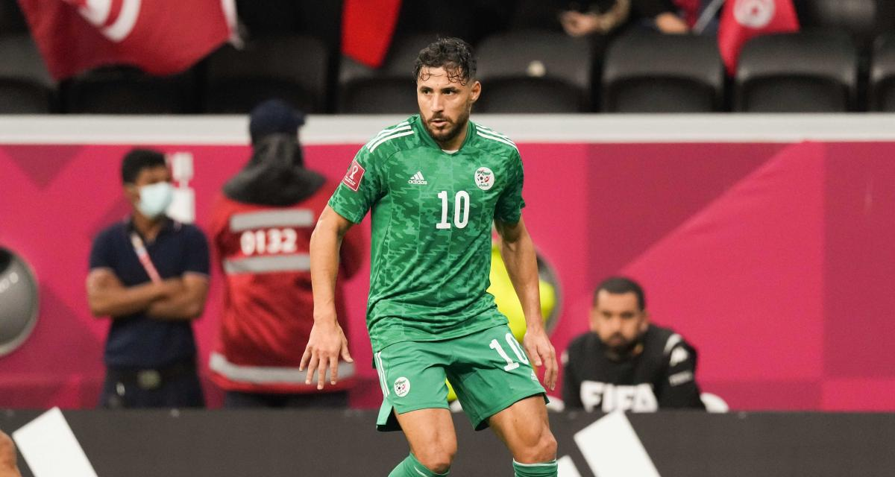

Bienvenue sur la page de Youcef Belaili

Valeur actuelle: 1,5M d'€
Biographie
Youcef Belaïli, né le 14 mars 1992 à Oran, est un footballeur international algérien, qui évolue au poste d'ailier gauche ou de milieu de terrain a brest
Carriere
Youcef Belaïli devient footballeur professionnel en 2008, alors qu'il a à peine 16 ans, Il évolue alors au Mouloudia Club Oranais, en Algérie. En 2009, il rejoint le Chabab Ahly Bordj Bou Arreridj, où il ne dispute que cinq matchs. Youcef Belaïli revient au MC Oran en 2010 et signe une première saison prometteuse, avec 6 buts et une passe décisive en 21 apparitions. Il poursuit sa progression lors de la saison 2011-12 en marquant 8 buts (plus 6 passes décisives) en 24 matchs de Ligue 1 algérienne.
Le 31 janvier 2022, il signe au Stade de brest en France. Le club a vu son nombre d'abonnés sur les réseaux sociaux augmenter de 380% grâce à cette arrivée.